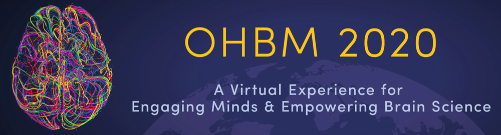

Neuroimaging Analysis Methods For Naturalistic Data¶
Written by Luke Chang, Emily Finn, Jeremy Manning
Naturalistic stimuli, such as films or stories, are growing in popularity for human neuroimaging experiments. More controlled than resting-state data, and more engaging and ecologically valid than traditional tasks, these rich, dynamic paradigms yield data that can be analyzed in many different ways to answer a variety of scientific questions. However, unlike resting-state and task-based designs, there are currently no standard methods to analyze data from naturalistic experiments. While traditional methods (e.g., univariate GLM and functional connectivity) can be used, naturalistic designs open up the possibility for new opportunities for methodological innovation that can take advantage of the unique features of these data. Unfortunately, most of the most widely used neuroimaging analysis toolboxes do not currently include any of the modern analysis techniques that are being used for naturalistic data.
To meet this need, we have created naturalistic-data.org an online book that includes a collection of the state-of-the-art techniques used in analyzing naturalistic data. Most of the techniques were developed in individual labs (including some of the contributors to this project). We have prepared a collection of interactive tutorials that provide background information and walkthroughs of how to perform the analytic technique on two different open datasets (Sherlock from Chen et al., 2017 and Paranoia from Finn et al., 2018) using open science tools developed within the Python and R programming languages. Most of the tutorials also include videos explaining the theory or applications of the technique that complement the more technical hands-on tutorials. All of the videos can also be viewed separately on our Naturalistic Data Analysis youtube channel. This resource was developed as a new format for a full day Educational Course for OHBM 2020 by Luke Chang, Emily Finn, Jeremy Manning, and Tor Wager who are all professors at Dartmouth College in the Department of Psychological and Brain Sciences. We have an additional 10 contributors from all over the world that are emerging as leaders in this nascent field. We hope to continue adding content as new analysis methods are developed in the field and welcome contributions from all.
Overview¶
The course is divided into three different sections: Getting Started, Background Information, and Analysis Tutorials.
Getting Started¶
In the Getting Started section, we provide tutorials for how to download the data we will be using for the tutorials with datalad. Currently, the server we are hosting the data on can be slow, so we encourage you to start this as soon as possible if you would like to download all of the data (+200 gb). However, different tutorials rely on different data, so you can also wait to download only the data you need for the methods you are interested in working with. We also provide instructions for how to download and install the software that will be required for various tutorials. For the most part, almost all of the tools should be platform independent (i.e., they should work on Mac, PC, or Linux). Finally, we explain how we preprocessed the data and provide our current recommendations for preprocessing naturalistic data that might be slightly different than analyzing task-based or resting-state data.
Background Resources¶
As all of our tutorials introduce fairly advanced techniques using primarily Python, we have provided additional tutorials that we hope can quickly get most people up to speed to be able to follow along. These include basic introductions to Python, working with behavioral and neuroimaging data, and plotting. In addition, if you would like an even more in-depth background to the basics of neuroimaging using Python, we encourage you to check out the DartBrains.org online course, which has a similar format to this one. If you already feel comfortable programming in Python, we encourage you to just dive right into the tutorials.
Analysis Tutorials¶
The analysis tutorials have been designed to provide a general overview of the main issues and introduce cutting edge techniques for analyzing naturalistic data. Though these tutorials are written for using naturalistic data, we note that several of the methods could also be used with task-based or resting-state data.
How do we build models using naturalistic designs?¶
One of the core issues in analyzing naturalistic data is building a model to predict brain responses. Unlike traditional task-based experimental designs, it is not always known when participants on average are engaged in a specific cognitive process. We have included a tutorial on how to use the Pliers toolbox (McNamara et al., 2017) from Tal Yarkoni’s Psychoinformatics lab to obtain automated annotations using many types of models trained to recognize objects, speech, music, and people. These annotations can be used to help interpret results, or can be directly used in encoding and decoding models. This toolbox is part of the Neuroscout platform for analyzing naturalistic fMRI studies. We have also included a tutorial on decoding based on Natural Language Processing that uses word embeddings to train a model to predict the words a participant is hearing at any given time during a naturalistic narrative stimulus, based on the activity patterns of other participants.
While using explicit annotations is advantageous from the standpoint of interpretability and generalizability to other stimuli, analyses based on these models make two critical assumptions: one, that the experimenter knows which features of the stimulus are important for driving brain activity, and two, that they have modeled these features accurately. Non-optimal assumptions at either step will impair sensitivity.
Beyond annotations, some analytic techniques have been developed specifically to leverage the large neural variations elicited by these naturalistic designs not by modeling the stimulus itself per se, but rather using the neural responses of other participants as a model. For example, an early and popular technique to get around the issue of knowing what types of cognitive processes were being engaged at specific points in time was to predict one person’s brain activity from another person’s activity. Intersubject Correlation (ISC) methods were developed by Uri Hasson’s lab to identify neural activity that was shared across individuals (Hasson et al., 2004, Nummenmaa et al., 2018, Nastase et al., 2019 ). The general idea was that reliable signals should be common across individuals while unreliable signals such as noise and idiosyncratic processes should be filtered out akin to an intraclass correlation coefficient, which is a measure of reliability from psychometrics. This is currently one of the most popular analytic techniques, which has lead to many extensions including: Intersubject Phase Synchrony (ISPS; Glerean et al., 2012) for looking at the dynamics of ISC, Intersubject Functional Connectivity (ISFC; Simony et al., 2016) for looking at dynamics of functional connectivity, and Intersubject Representational Analysis (ISRSA; Chen et al., 2020, Finn et al., 2020, van Baar et al., 2019) for looking at individual variation.
Most of these methods, with the exception of ISRSA, assume that individuals have common neural responses. However, in practice we know that there is enormous heterogeneity across individuals. Functional Alignment techniques such as hyperalignment(Haxby et al., 2011, Haxby et al., 2020) or the shared response model (Chen et al., 2015) aim to minimize individual variations by realigning brains into a common model based on shared neural responses.
We note that there are many high profile papers that use models, such as univariate encoding models ([Huth et al., 2016](https://www.nature.com/articles/nature17637?version=meter+at+3&module=meter-Links&pgtype=article&contentId=&mediaId=&referrer=&priority=true&action=click&contentCollection=m eter-links-click), Nishimoto et al., 2011, Naselaris, et al., 2011 ) to analyze naturalistic data. These models have proven to be useful in characterizing neural responses to naturalistic data in regions involved in perception and also semantics. However, we are not optimistic that they will be immediately useful for studying processes that involve abstract or endogenous processing such as affect and social cognition. Nonetheless, we unfortunately do not currently have any tutorials using these techniques at this time, but point the interested reader towards Alex Huth’s tutorials on modeling language with code available on Github. We hope to add additional tutorials in the future and welcome contributions from others.
How does the brain segment events?¶
One question that has been of interest to many subfields of cognitive neuroscience is how the brain learns to segment information from our experiences to form discrete events that can be organized, stored, and retrieved. This question is of interest to researchers studying perception, learning and memory, navigation, attention, affect, and even social cognition. Though this topic has been of interest for many years (Zacks et al., 2007, [Zacks & Tversky, 2001]), Ezzyat & Davachi, 2011](https://journals.sagepub.com/doi/pdf/10.1177/0956797610393742), Schapiro et al., 2013), there have been several recent exciting papers that have sought to study this question in the context of naturalistic designs (Baldassano et al., 2017, Baldassano et al., 2018, Heusser et al., 2018, Antony et al., 2020, Geerligs et al., 2020, Chang et al., 2018). The general idea is to identify how patterns of brain activity change in response to experiences to segment these experiences into discrete events. These event segmentations likely depend on the level of processing. For example, segmenting sensory information likely occurs at a shorter time scale than segmenting more abstract contexts such as scenes (Baldassano et al., 2017). In the event segmentation tutorials, we introduce two different techniques for studying event segmentation based on discrete shifts in spatial patterns of brain activity. One approach uses Hidden Markov Models (HMMs; Baldassano et al., 2017), and the uses Greedy State Boundary Search (GSBS; Geerligs et al., 2020).
How can we study the dynamics of brain activity?¶
Our real-world thoughts arise from coordinated interactions between networks of brain regions (e.g., Bassett et al. (2006), Turk-Browne (2013)). These networks are dynamically reconfigured as our thoughts and experiences change. For example, recent work by Simony et al. (2016) shows that connectivity patterns within the default mode network are dynamically reconfigured during story listening, and Manning et al. (2018) demonstrated a similar phenomenon during movie watching. Changes in discrete states based on dynamic patterns of functional connectivity have often been modeled using HMMs. However, these models are biased to identify states that last for shorter numbers of time points. Hidden Semi-Markov Models (HSMMs) explicitly include parameters modeling the distribution of the number of time points within a state ([Shappell et al., 2019)(https://www.sciencedirect.com/science/article/pii/S1053811919300990)). We include a tutorial fitting HSMMs using R.
The next generation of brain dynamics approaches are intended to characterize higher order interactions between brain structures. For example, if functional connectivity approaches seek to characterize interactions between pairs of regions (e.g., A and B, or C and D, etc.), high-order patterns reflect interactions between those first-order interactions. In other words, a second-order pattern might characterize how the dynamic patterns of A-B correlations relate to the dynamic patterns of C-D correlations. Faskowitz et al. (2020) refer to these second-order interactions as “edge networks,” which may be used to discover novel aspects of brain structure and function. Owen et al. (2020) describe a hierarchy of such patterns. Under their high-order dynamics framework, termed timecorr, order \(n\) interactions between sets of brain structures describe how homologous networks of order \(n-1\) interactions are related. We provide a tutorial for applying timecorr to a naturalistic dataset, revealing different aspects of brain activity dynamics that may then be related to different aspects of cognition and compared within or across individuals.
How can we visualize high dimensional data?¶
A defining feature of naturalistic data is its complexity. Whereas “classic” trial-based experimental designs favor a high degree of control over participants’ experiences (at the cost of realism and generalizability), naturalistic stimuli are intended to exhibit greater real-world relevance (at the cost of experimental control) (Willems et al., 2020, Wheatley, et al., 2019). Relating the complex dynamics of naturalistic stimuli to the complex dynamics of cognitive and neural responses to those stimuli requires innovative methods. Importantly, oversimplifying models of stimuli, cognitive dynamics, and neural dynamics can lead to false insights (e.g., Jolly and Chang (2018)).
An approach proposed by Heusser et al. (2018) defines a set of heuristics for gaining detailed insights into high-dimensional data, including naturalistic stimuli and the neural responses to those stimuli. The approach, called HyperTools, entails embedding the data in a series of low-dimensional spaces, each highlighting different aspects of the high-dimensional data. Each embedding space is constructed such that different data modalities (e.g., stimuli and neural responses from different people) may be geometrically compared. In our Visualizing High-Dimensional Data tutorial, we apply HyperTools to neural responses and text annotations from a movie watching dataset.
Questions¶
Please post any questions that arise from the material in this course on our Discourse Page.
License for this book¶
All content is licensed under the Creative Commons Attribution-ShareAlike 4.0 International (CC BY-SA 4.0) license.
This book was originally prepared for the Educational Workshop “Analysis Methods for Naturalistic Data” that took place as part of the 2020 virtual annual meeting of the Organization for Human Brain Mapping. We plan for it to serve as a living resource that will be maintained, updated, and added to as this exciting field continues to progress.
